Grade 5 — Rational numbers
Decimals, fractions, volume and patterns. This guide contains 48 chapter-level worked lessons, review questions, answers, and linked illustrations.
Contents — select a chapter
Decimal operations
Align decimal points for addition/subtraction; use place value for multiplication.
1.4 × 0.3 = 0.42.
- 14 × 3 = 42
- Two combined decimal places
- 0.42.
2.5 * 0.4
Hint: Multiply 25×4 and shift two places.
Show answer and verify
1
Check the units, inputs and intermediate steps. Different solution methods may be valid.
Divide decimals
Scale both dividend and divisor by the same power of ten.
6.3 ÷ 0.9 = 7.
- Multiply both by 10
- 63 ÷ 9 = 7.
8.4 / 0.7
Hint: Move each decimal one place.
Show answer and verify
12
Check the units, inputs and intermediate steps. Different solution methods may be valid.
Add unlike fractions
Find a common denominator and add equivalent fractions.
1/3 + 1/4 = 7/12.
- Common denominator 12
- 4/12 + 3/12
- 7/12.
1/2 + 1/4
Hint: Use quarters.
Show answer and verify
0.75
Check the units, inputs and intermediate steps. Different solution methods may be valid.
Multiply fractions
Multiply numerator by numerator and denominator by denominator.
2/3 × 3/5 = 6/15 = 2/5.
- Multiply 2 × 3
- Multiply 3 × 5
- Simplify.
3/4 * 2/3
Hint: Cancel common factors.
Show answer and verify
0.5
Check the units, inputs and intermediate steps. Different solution methods may be valid.
Fraction division
Dividing by a nonzero fraction means multiply by its reciprocal.
3/4 ÷ 1/2 = 3/2.
- Keep first fraction
- Flip divisor
- Multiply.
2/3 / (4/5)
Hint: Multiply two thirds by five fourths.
Show answer and verify
0.8333333333333334
Check the units, inputs and intermediate steps. Different solution methods may be valid.
Order of operations
Apply parentheses, powers, multiplication/division, then addition/subtraction.
3 + 4 × 5 = 23.
- Compute 4 × 5 = 20
- Add 3 = 23.
(6 + 2) * 3^2
Hint: Parentheses first, exponent next.
Show answer and verify
72
Check the units, inputs and intermediate steps. Different solution methods may be valid.
Volume of prisms
Rectangular prism volume = length × width × height.
2 × 3 × 4 = 24 cubic units.
- Find base area 2 × 3
- Multiply by height 4.
A 5 by 4 by 3 prism has what volume?
Hint: Multiply all three dimensions.
Show answer and verify
60
Check the units, inputs and intermediate steps. Different solution methods may be valid.
Coordinate plane
Points (x,y) describe horizontal and vertical displacement from the origin.
(3, −2) is right 3 and down 2.
- Read x-coordinate first
- Then y-coordinate.
What is x + y for the point (7, −3)?
Hint: Horizontal plus vertical coordinates.
Show answer and verify
4
Check the units, inputs and intermediate steps. Different solution methods may be valid.
Powers of ten
Multiplying by 10^n shifts decimal places by n positions.
4.25 × 10^3 = 4250.
- Move decimal three places right
- Fill empty places with zero.
0.067 * 1000
Hint: Move decimal three places to the right.
Show answer and verify
67
Check the units, inputs and intermediate steps. Different solution methods may be valid.
Numerical patterns
Describe a rule and predict later terms.
5, 9, 13, 17 follows +4.
- Subtract adjacent terms
- Each difference is 4
- Next 21.
Find next: 8, 14, 20, 26, ...
Hint: Add six each time.
Show answer and verify
32
Check the units, inputs and intermediate steps. Different solution methods may be valid.
Decimal place value to thousandths
Decimal place value to thousandths: Write decimals in aligned place-value columns and track every decimal digit. Ten hundredths make one tenth and ten tenths make one whole.
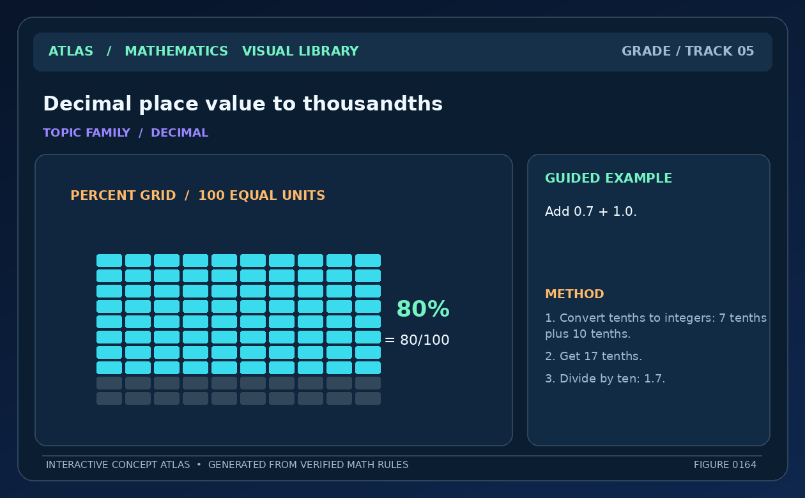
Add 0.7 + 1.0.
- Convert tenths to integers: 7 tenths plus 10 tenths.
- Get 17 tenths.
- Divide by ten: 1.7.
1.2 + 1.5 = ?
Hint: Align the decimal points.
Show answer and verify
2.7
Check the units, inputs and intermediate steps. Different solution methods may be valid.
Multi-digit decimal addition
Multi-digit decimal addition: Write decimals in aligned place-value columns and track every decimal digit. Ten hundredths make one tenth and ten tenths make one whole.
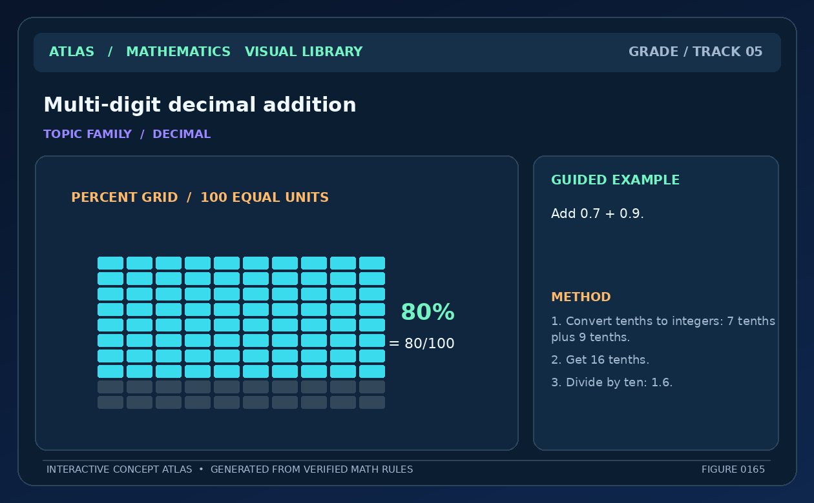
Add 0.7 + 0.9.
- Convert tenths to integers: 7 tenths plus 9 tenths.
- Get 16 tenths.
- Divide by ten: 1.6.
1.3 + 1.5 = ?
Hint: Align the decimal points.
Show answer and verify
2.8
Check the units, inputs and intermediate steps. Different solution methods may be valid.
Multi-digit decimal subtraction
Multi-digit decimal subtraction: Write decimals in aligned place-value columns and track every decimal digit. Ten hundredths make one tenth and ten tenths make one whole.
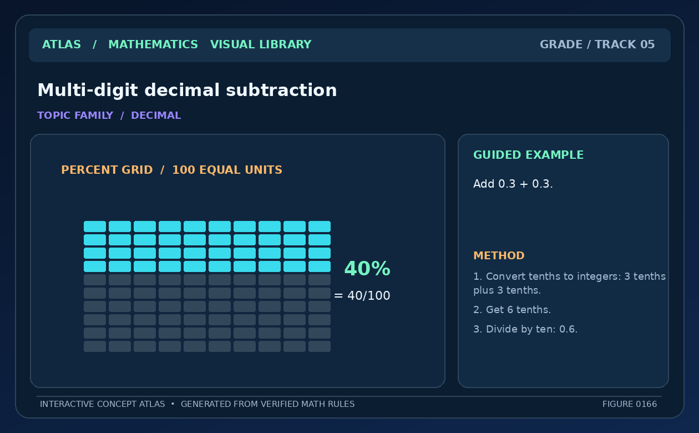
Add 0.3 + 0.3.
- Convert tenths to integers: 3 tenths plus 3 tenths.
- Get 6 tenths.
- Divide by ten: 0.6.
0.4 + 0.4 = ?
Hint: Align the decimal points.
Show answer and verify
0.8
Check the units, inputs and intermediate steps. Different solution methods may be valid.
Decimal multiplication
Decimal multiplication: Write decimals in aligned place-value columns and track every decimal digit. Ten hundredths make one tenth and ten tenths make one whole.
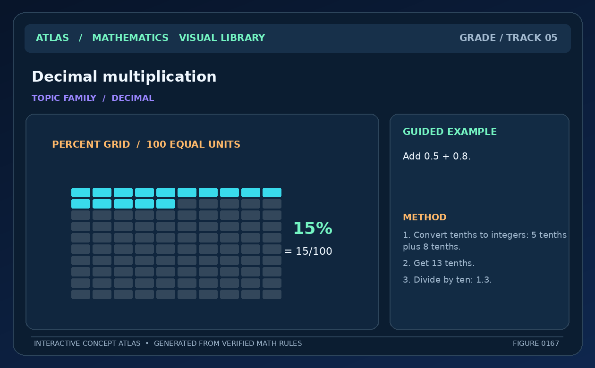
Add 0.5 + 0.8.
- Convert tenths to integers: 5 tenths plus 8 tenths.
- Get 13 tenths.
- Divide by ten: 1.3.
1.2 + 1.5 = ?
Hint: Align the decimal points.
Show answer and verify
2.7
Check the units, inputs and intermediate steps. Different solution methods may be valid.
Decimal division
Decimal division: Write decimals in aligned place-value columns and track every decimal digit. Ten hundredths make one tenth and ten tenths make one whole.
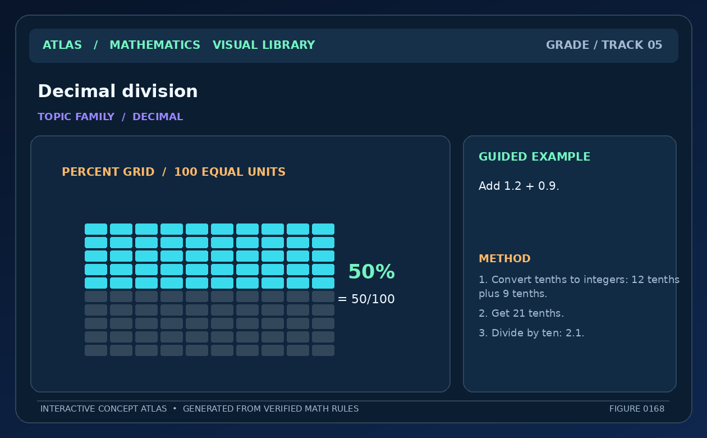
Add 1.2 + 0.9.
- Convert tenths to integers: 12 tenths plus 9 tenths.
- Get 21 tenths.
- Divide by ten: 2.1.
1.3 + 1.0 = ?
Hint: Align the decimal points.
Show answer and verify
2.3
Check the units, inputs and intermediate steps. Different solution methods may be valid.
Estimating decimal products
Estimating decimal products: Write decimals in aligned place-value columns and track every decimal digit. Ten hundredths make one tenth and ten tenths make one whole.
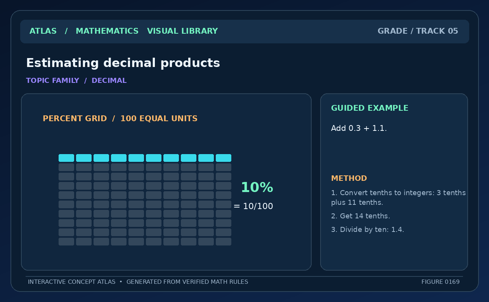
Add 0.3 + 1.1.
- Convert tenths to integers: 3 tenths plus 11 tenths.
- Get 14 tenths.
- Divide by ten: 1.4.
0.4 + 1.2 = ?
Hint: Align the decimal points.
Show answer and verify
1.6
Check the units, inputs and intermediate steps. Different solution methods may be valid.
Rounding decimals
Rounding decimals: Write decimals in aligned place-value columns and track every decimal digit. Ten hundredths make one tenth and ten tenths make one whole.
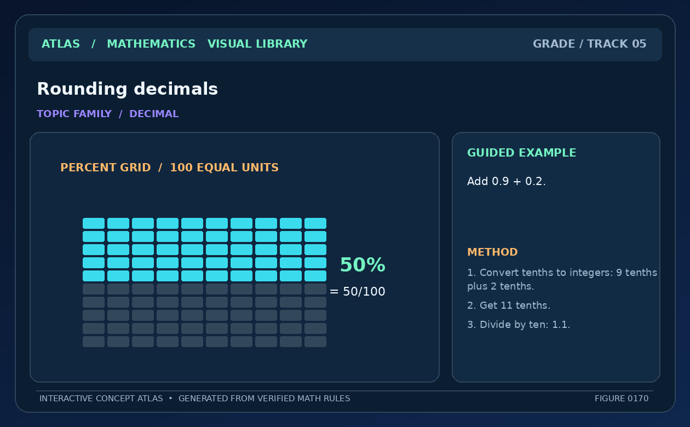
Add 0.9 + 0.2.
- Convert tenths to integers: 9 tenths plus 2 tenths.
- Get 11 tenths.
- Divide by ten: 1.1.
1.6 + 0.9 = ?
Hint: Align the decimal points.
Show answer and verify
2.5
Check the units, inputs and intermediate steps. Different solution methods may be valid.
Money calculations with decimals
Money calculations with decimals: Write decimals in aligned place-value columns and track every decimal digit. Ten hundredths make one tenth and ten tenths make one whole.
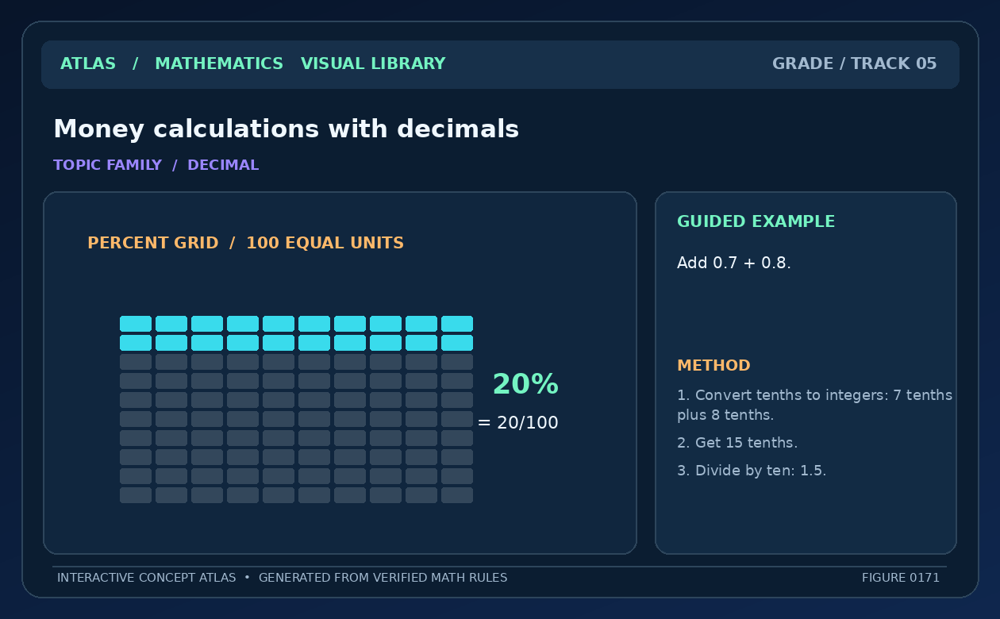
Add 0.7 + 0.8.
- Convert tenths to integers: 7 tenths plus 8 tenths.
- Get 15 tenths.
- Divide by ten: 1.5.
1.1 + 1.2 = ?
Hint: Align the decimal points.
Show answer and verify
2.3
Check the units, inputs and intermediate steps. Different solution methods may be valid.
Fraction equivalence and simplification
Fraction equivalence and simplification: Use the numerator for selected parts and denominator for equal pieces in the whole. Equivalent fractions are obtained by multiplying numerator and denominator by the same nonzero factor.
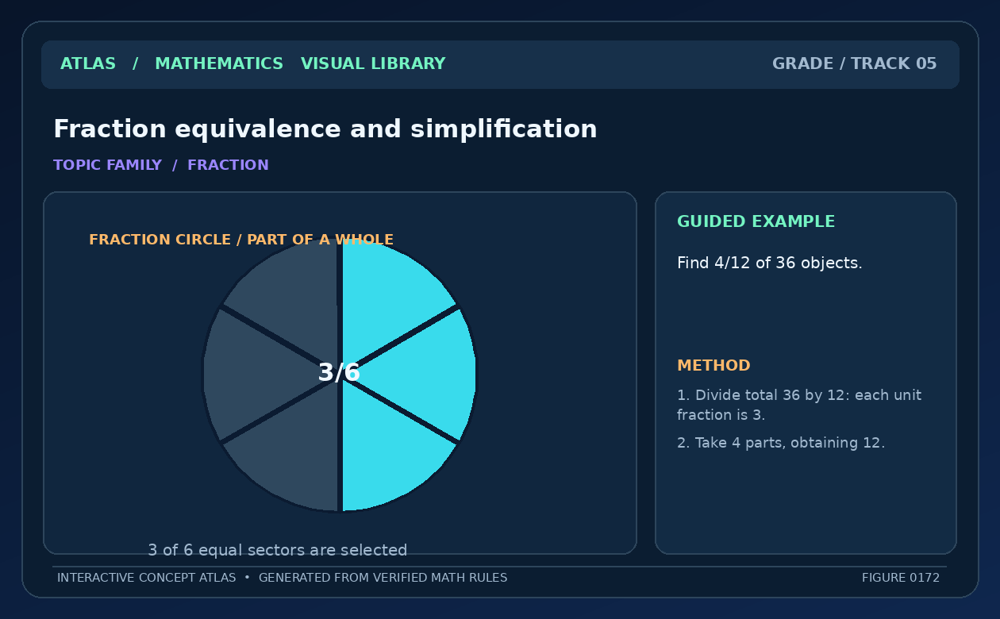
Find 4/12 of 36 objects.
- Divide total 36 by 12: each unit fraction is 3.
- Take 4 parts, obtaining 12.
Find 8/12 of 36 objects.
Hint: First find the value of one equal part.
Show answer and verify
24
Check the units, inputs and intermediate steps. Different solution methods may be valid.
Adding fractions with different denominators
Adding fractions with different denominators: Use the numerator for selected parts and denominator for equal pieces in the whole. Equivalent fractions are obtained by multiplying numerator and denominator by the same nonzero factor.
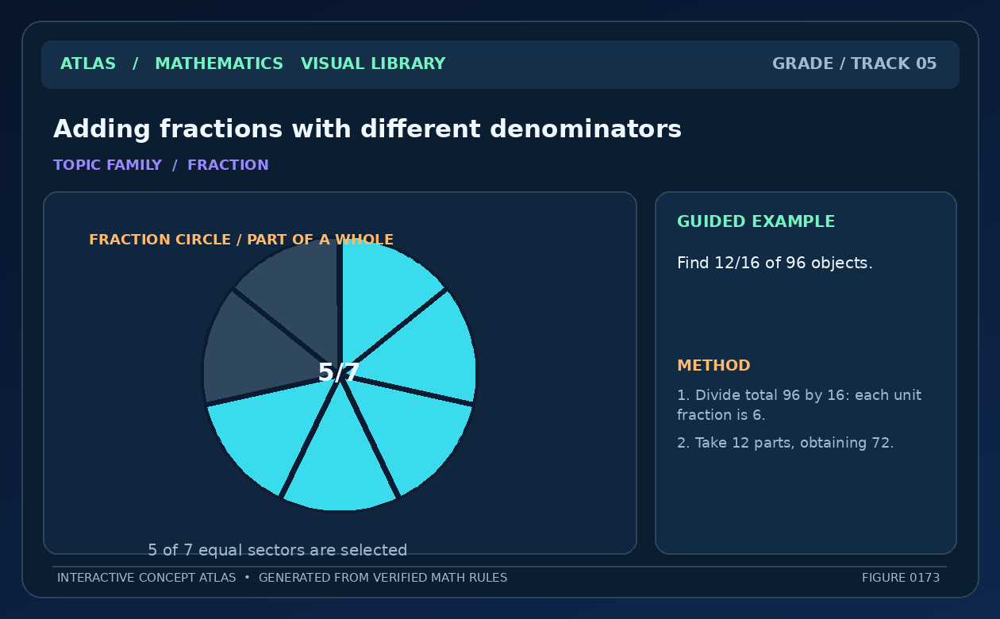
Find 12/16 of 96 objects.
- Divide total 96 by 16: each unit fraction is 6.
- Take 12 parts, obtaining 72.
Find 4/16 of 96 objects.
Hint: First find the value of one equal part.
Show answer and verify
24
Check the units, inputs and intermediate steps. Different solution methods may be valid.
Subtracting unlike fractions
Subtracting unlike fractions: Use the numerator for selected parts and denominator for equal pieces in the whole. Equivalent fractions are obtained by multiplying numerator and denominator by the same nonzero factor.
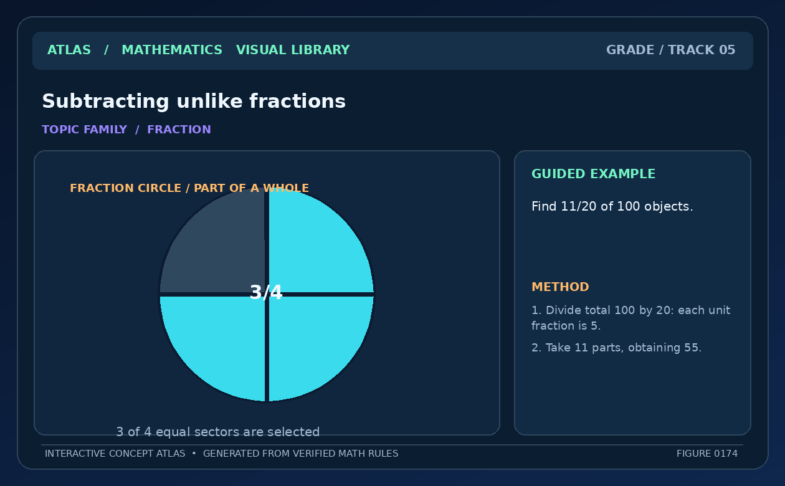
Find 11/20 of 100 objects.
- Divide total 100 by 20: each unit fraction is 5.
- Take 11 parts, obtaining 55.
Find 9/20 of 100 objects.
Hint: First find the value of one equal part.
Show answer and verify
45
Check the units, inputs and intermediate steps. Different solution methods may be valid.
Mixed-number addition
Mixed-number addition: Use the numerator for selected parts and denominator for equal pieces in the whole. Equivalent fractions are obtained by multiplying numerator and denominator by the same nonzero factor.
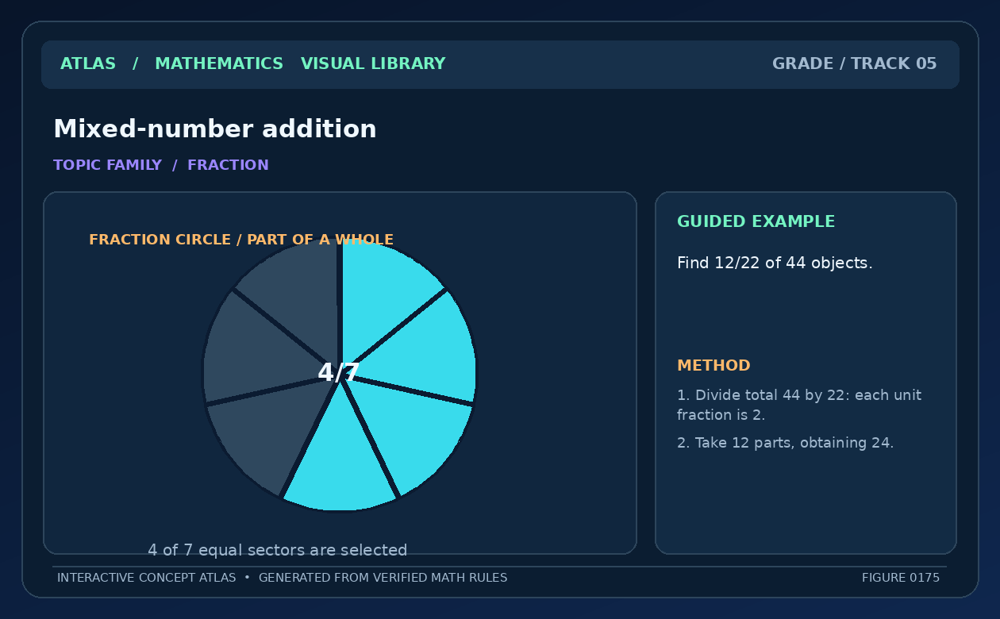
Find 12/22 of 44 objects.
- Divide total 44 by 22: each unit fraction is 2.
- Take 12 parts, obtaining 24.
Find 10/22 of 44 objects.
Hint: First find the value of one equal part.
Show answer and verify
20
Check the units, inputs and intermediate steps. Different solution methods may be valid.
Mixed-number subtraction
Mixed-number subtraction: Use the numerator for selected parts and denominator for equal pieces in the whole. Equivalent fractions are obtained by multiplying numerator and denominator by the same nonzero factor.
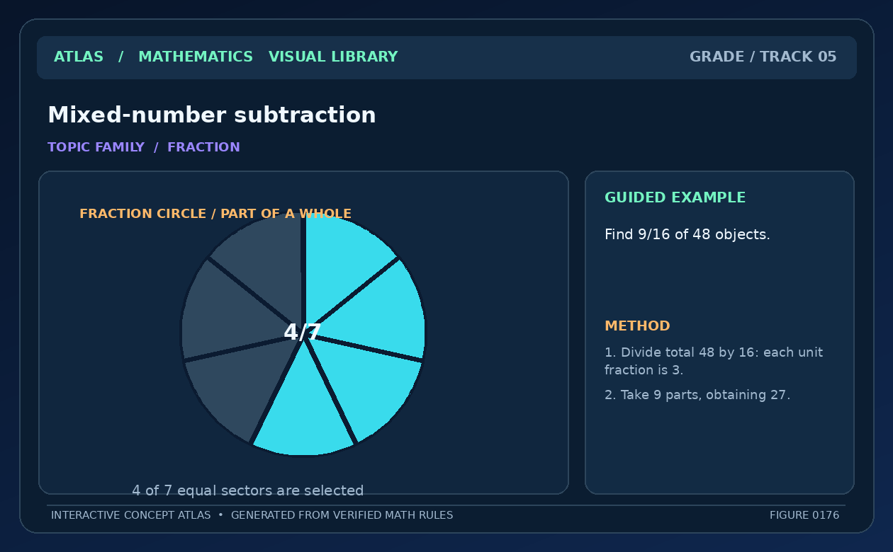
Find 9/16 of 48 objects.
- Divide total 48 by 16: each unit fraction is 3.
- Take 9 parts, obtaining 27.
Find 7/16 of 48 objects.
Hint: First find the value of one equal part.
Show answer and verify
21
Check the units, inputs and intermediate steps. Different solution methods may be valid.
Multiplying fractions
Multiplying fractions: Use the numerator for selected parts and denominator for equal pieces in the whole. Equivalent fractions are obtained by multiplying numerator and denominator by the same nonzero factor.
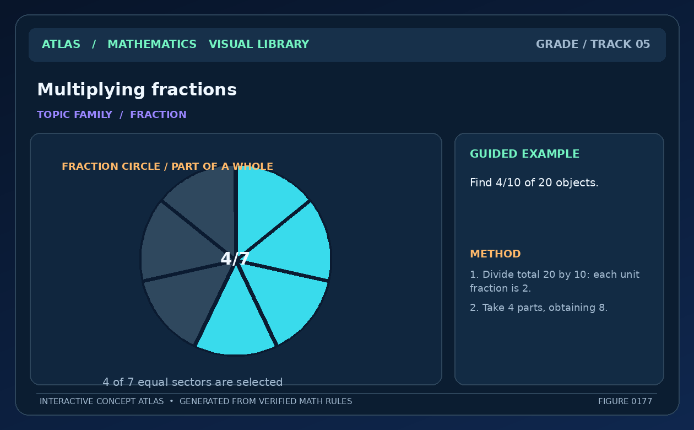
Find 4/10 of 20 objects.
- Divide total 20 by 10: each unit fraction is 2.
- Take 4 parts, obtaining 8.
Find 6/10 of 20 objects.
Hint: First find the value of one equal part.
Show answer and verify
12
Check the units, inputs and intermediate steps. Different solution methods may be valid.
Fraction scaling
Fraction scaling: Use the numerator for selected parts and denominator for equal pieces in the whole. Equivalent fractions are obtained by multiplying numerator and denominator by the same nonzero factor.
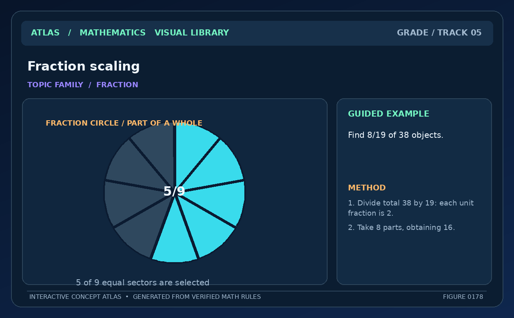
Find 8/19 of 38 objects.
- Divide total 38 by 19: each unit fraction is 2.
- Take 8 parts, obtaining 16.
Find 11/19 of 38 objects.
Hint: First find the value of one equal part.
Show answer and verify
22
Check the units, inputs and intermediate steps. Different solution methods may be valid.
Dividing unit fractions by integers
Dividing unit fractions by integers: Use the numerator for selected parts and denominator for equal pieces in the whole. Equivalent fractions are obtained by multiplying numerator and denominator by the same nonzero factor.
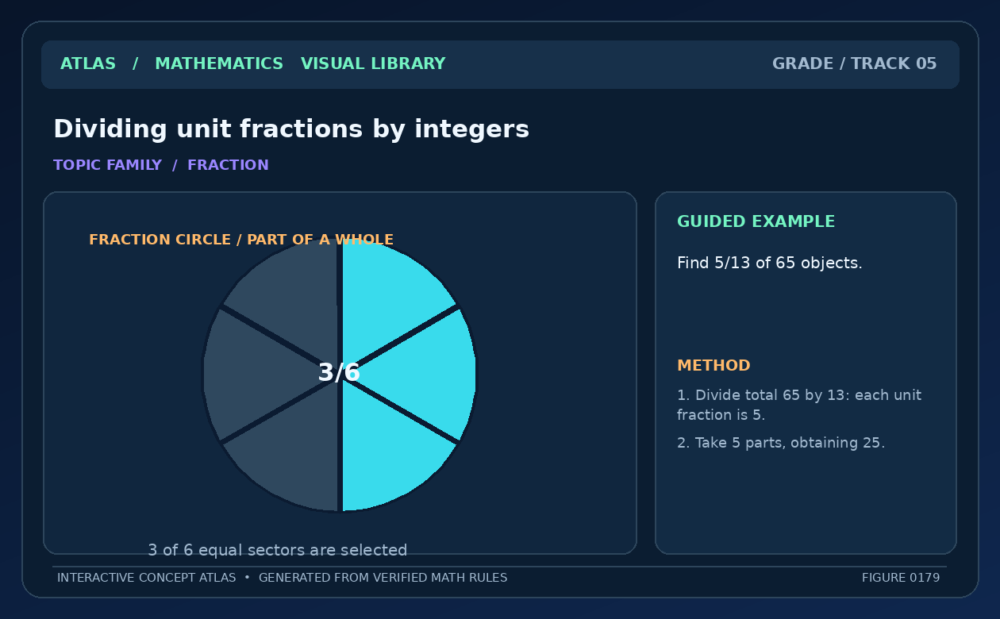
Find 5/13 of 65 objects.
- Divide total 65 by 13: each unit fraction is 5.
- Take 5 parts, obtaining 25.
Find 8/13 of 65 objects.
Hint: First find the value of one equal part.
Show answer and verify
40
Check the units, inputs and intermediate steps. Different solution methods may be valid.
Dividing integers by unit fractions
Dividing integers by unit fractions: Use the numerator for selected parts and denominator for equal pieces in the whole. Equivalent fractions are obtained by multiplying numerator and denominator by the same nonzero factor.
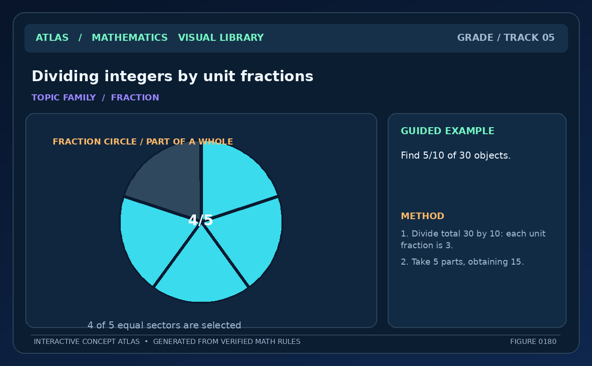
Find 5/10 of 30 objects.
- Divide total 30 by 10: each unit fraction is 3.
- Take 5 parts, obtaining 15.
Find 5/10 of 30 objects.
Hint: First find the value of one equal part.
Show answer and verify
15
Check the units, inputs and intermediate steps. Different solution methods may be valid.
Fraction word problems
Fraction word problems: Use the numerator for selected parts and denominator for equal pieces in the whole. Equivalent fractions are obtained by multiplying numerator and denominator by the same nonzero factor.
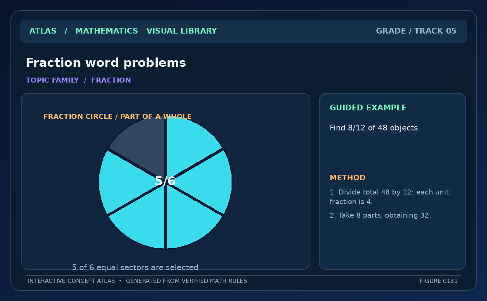
Find 8/12 of 48 objects.
- Divide total 48 by 12: each unit fraction is 4.
- Take 8 parts, obtaining 32.
Find 4/12 of 48 objects.
Hint: First find the value of one equal part.
Show answer and verify
16
Check the units, inputs and intermediate steps. Different solution methods may be valid.
Powers of ten
Powers of ten: Exponents count repeated multiplication; use exponent laws only for compatible bases. For nonzero a, a^m × a^n = a^(m+n).
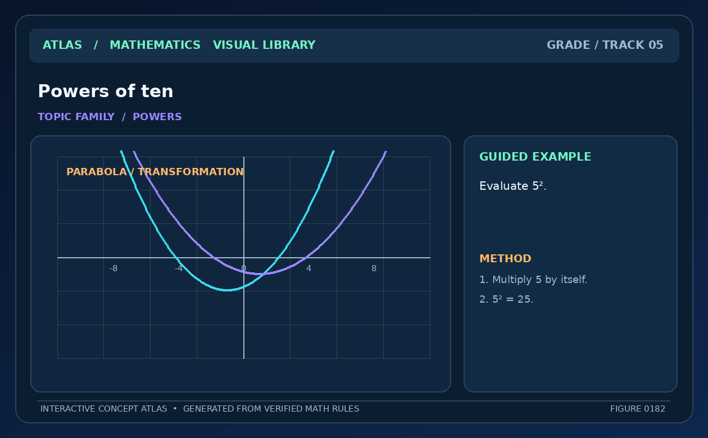
Evaluate 5².
- Multiply 5 by itself.
- 5² = 25.
Calculate 4³.
Hint: Cube means multiply the base three times.
Show answer and verify
64
Check the units, inputs and intermediate steps. Different solution methods may be valid.
Scientific notation introduction
Scientific notation introduction: Exponents count repeated multiplication; use exponent laws only for compatible bases. For nonzero a, a^m × a^n = a^(m+n).
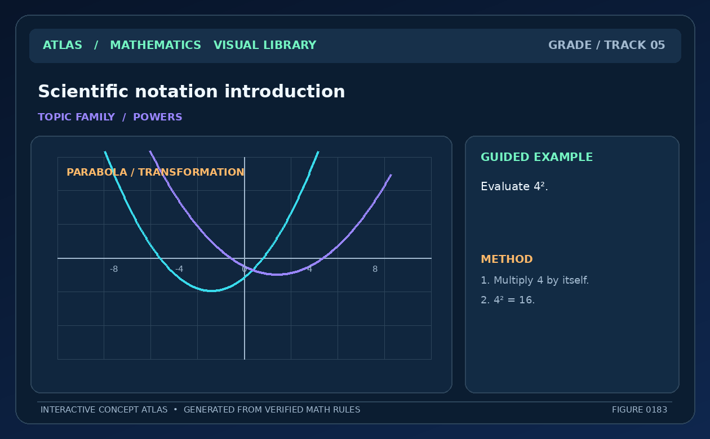
Evaluate 4².
- Multiply 4 by itself.
- 4² = 16.
Calculate 3³.
Hint: Cube means multiply the base three times.
Show answer and verify
27
Check the units, inputs and intermediate steps. Different solution methods may be valid.
Multiplying by powers of ten
Multiplying by powers of ten: Exponents count repeated multiplication; use exponent laws only for compatible bases. For nonzero a, a^m × a^n = a^(m+n).
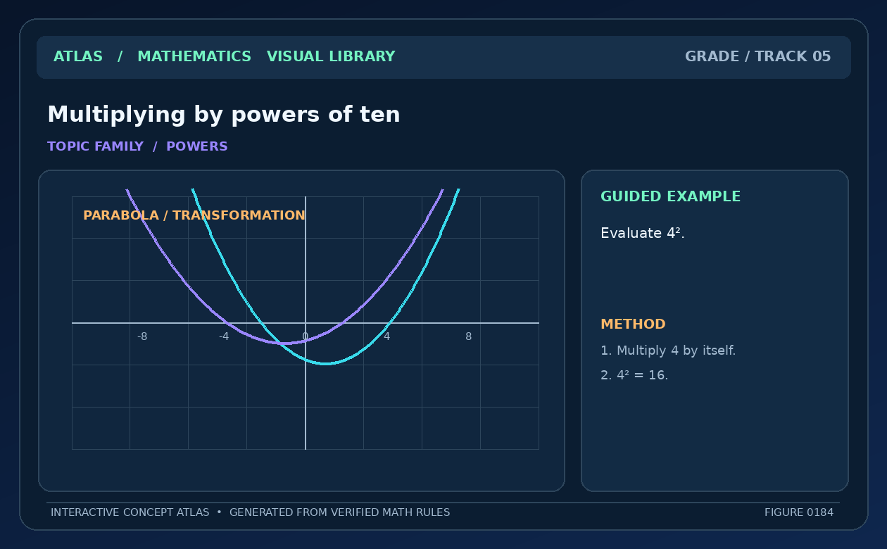
Evaluate 4².
- Multiply 4 by itself.
- 4² = 16.
Calculate 11³.
Hint: Cube means multiply the base three times.
Show answer and verify
1331
Check the units, inputs and intermediate steps. Different solution methods may be valid.
Decimal exponents and estimation
Decimal exponents and estimation: Exponents count repeated multiplication; use exponent laws only for compatible bases. For nonzero a, a^m × a^n = a^(m+n).
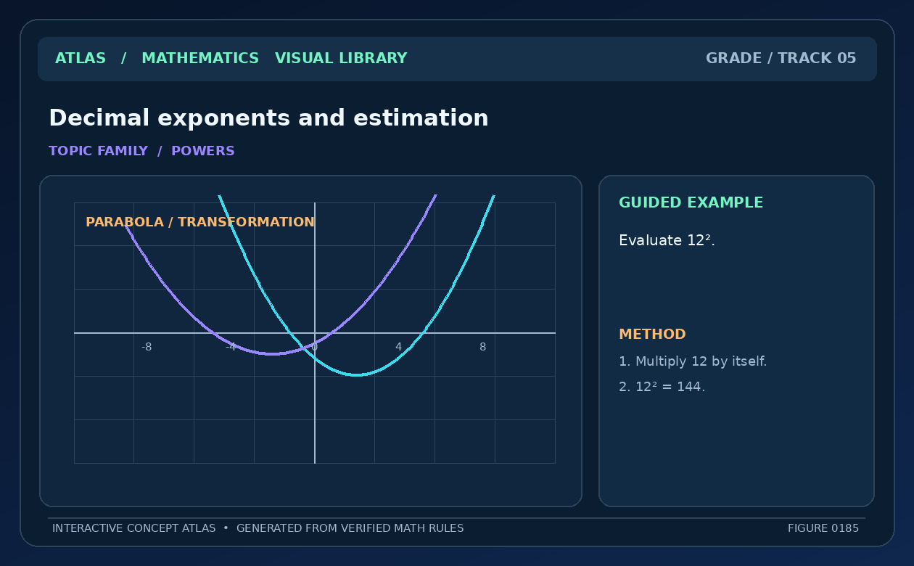
Evaluate 12².
- Multiply 12 by itself.
- 12² = 144.
Calculate 2³.
Hint: Cube means multiply the base three times.
Show answer and verify
8
Check the units, inputs and intermediate steps. Different solution methods may be valid.
Coordinate grids in first quadrant
Coordinate grids in first quadrant: Sketch and label known lengths, angles and shape properties before calculating. A valid geometric argument uses definitions and established properties.
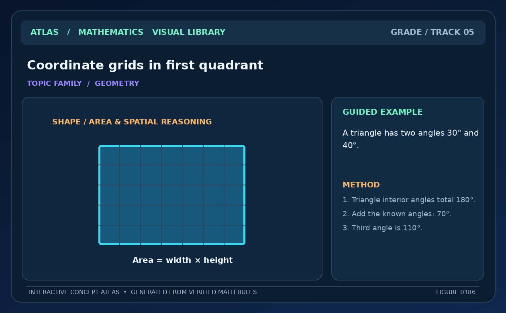
A triangle has two angles 30° and 40°.
- Triangle interior angles total 180°.
- Add the known angles: 70°.
- Third angle is 110°.
A triangle has angles 20° and 30°. Find the third.
Hint: Interior triangle angles sum to 180 degrees.
Show answer and verify
130
Check the units, inputs and intermediate steps. Different solution methods may be valid.
Graphing ordered pairs
Graphing ordered pairs: Sketch and label known lengths, angles and shape properties before calculating. A valid geometric argument uses definitions and established properties.
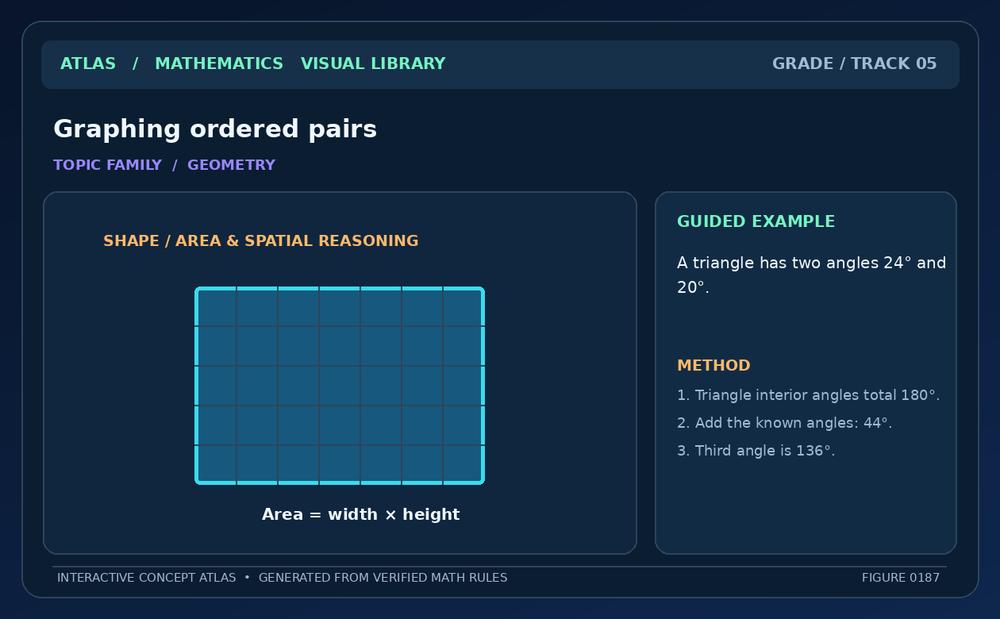
A triangle has two angles 24° and 20°.
- Triangle interior angles total 180°.
- Add the known angles: 44°.
- Third angle is 136°.
A triangle has angles 16° and 15°. Find the third.
Hint: Interior triangle angles sum to 180 degrees.
Show answer and verify
149
Check the units, inputs and intermediate steps. Different solution methods may be valid.
Classifying polygons by attributes
Classifying polygons by attributes: Sketch and label known lengths, angles and shape properties before calculating. A valid geometric argument uses definitions and established properties.
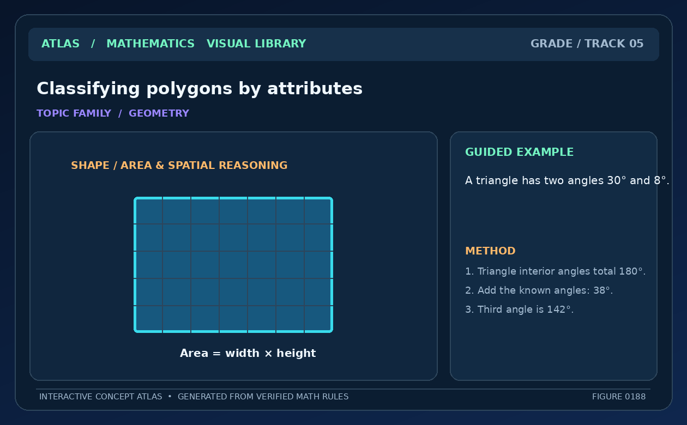
A triangle has two angles 30° and 8°.
- Triangle interior angles total 180°.
- Add the known angles: 38°.
- Third angle is 142°.
A triangle has angles 20° and 6°. Find the third.
Hint: Interior triangle angles sum to 180 degrees.
Show answer and verify
154
Check the units, inputs and intermediate steps. Different solution methods may be valid.
Converting between squares and cubes
Converting between squares and cubes: Sketch and label known lengths, angles and shape properties before calculating. A valid geometric argument uses definitions and established properties.
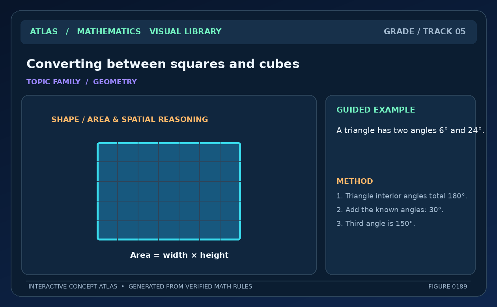
A triangle has two angles 6° and 24°.
- Triangle interior angles total 180°.
- Add the known angles: 30°.
- Third angle is 150°.
A triangle has angles 4° and 18°. Find the third.
Hint: Interior triangle angles sum to 180 degrees.
Show answer and verify
158
Check the units, inputs and intermediate steps. Different solution methods may be valid.
Solid net diagrams
Solid net diagrams: Sketch and label known lengths, angles and shape properties before calculating. A valid geometric argument uses definitions and established properties.
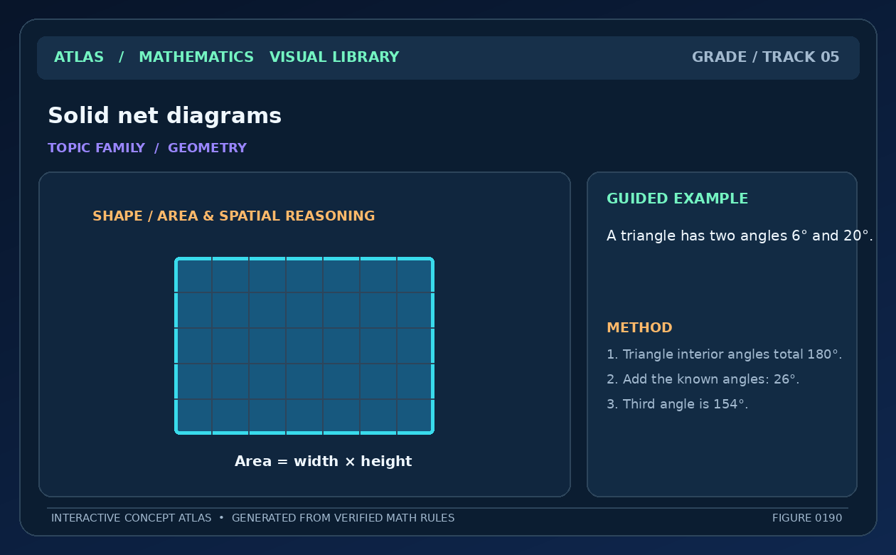
A triangle has two angles 6° and 20°.
- Triangle interior angles total 180°.
- Add the known angles: 26°.
- Third angle is 154°.
A triangle has angles 4° and 15°. Find the third.
Hint: Interior triangle angles sum to 180 degrees.
Show answer and verify
161
Check the units, inputs and intermediate steps. Different solution methods may be valid.
Finding areas of polygons
Finding areas of polygons: Decompose complicated regions into simpler shapes with known area formulas. Square units measure area; preserve the correct dimensions.
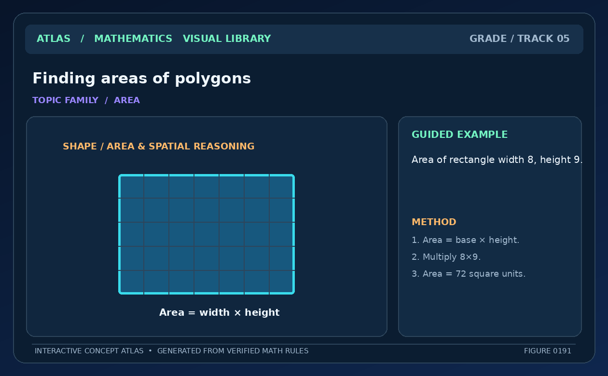
Area of rectangle width 8, height 9.
- Area = base × height.
- Multiply 8×9.
- Area = 72 square units.
Area of a rectangle 14 by 15?
Hint: Multiply both dimensions; use square units.
Show answer and verify
210
Check the units, inputs and intermediate steps. Different solution methods may be valid.
Areas of composite shapes
Areas of composite shapes: Decompose complicated regions into simpler shapes with known area formulas. Square units measure area; preserve the correct dimensions.
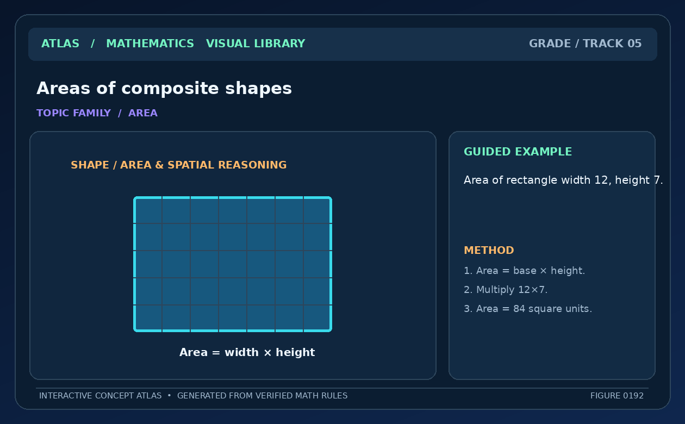
Area of rectangle width 12, height 7.
- Area = base × height.
- Multiply 12×7.
- Area = 84 square units.
Area of a rectangle 18 by 13?
Hint: Multiply both dimensions; use square units.
Show answer and verify
234
Check the units, inputs and intermediate steps. Different solution methods may be valid.
Rectangular prism surface area
Rectangular prism surface area: Decompose complicated regions into simpler shapes with known area formulas. Square units measure area; preserve the correct dimensions.
Area of rectangle width 5, height 3.
- Area = base × height.
- Multiply 5×3.
- Area = 15 square units.
Area of a rectangle 9 by 7?
Hint: Multiply both dimensions; use square units.
Show answer and verify
63
Check the units, inputs and intermediate steps. Different solution methods may be valid.
Volume of right rectangular prisms
Volume of right rectangular prisms: Multiply base area by height for a prism; other solids require appropriate formulas. Cubic units measure volume, not square units.
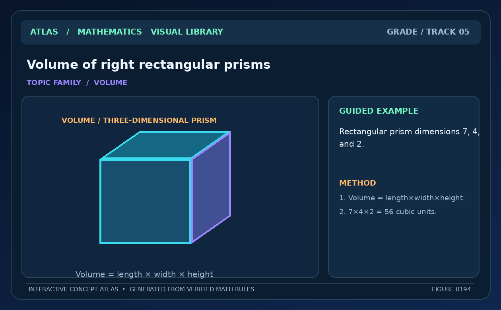
Rectangular prism dimensions 7, 4, and 2.
- Volume = length×width×height.
- 7×4×2 = 56 cubic units.
Volume of a prism 8 by 4 by 2?
Hint: Multiply all three dimensions.
Show answer and verify
64
Check the units, inputs and intermediate steps. Different solution methods may be valid.
Volume with unit cubes
Volume with unit cubes: Multiply base area by height for a prism; other solids require appropriate formulas. Cubic units measure volume, not square units.
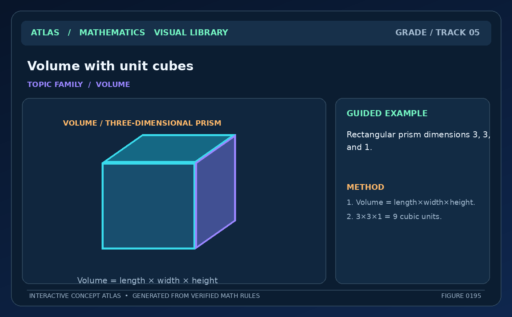
Rectangular prism dimensions 3, 3, and 1.
- Volume = length×width×height.
- 3×3×1 = 9 cubic units.
Volume of a prism 4 by 3 by 1?
Hint: Multiply all three dimensions.
Show answer and verify
12
Check the units, inputs and intermediate steps. Different solution methods may be valid.
Composite volume models
Composite volume models: Multiply base area by height for a prism; other solids require appropriate formulas. Cubic units measure volume, not square units.
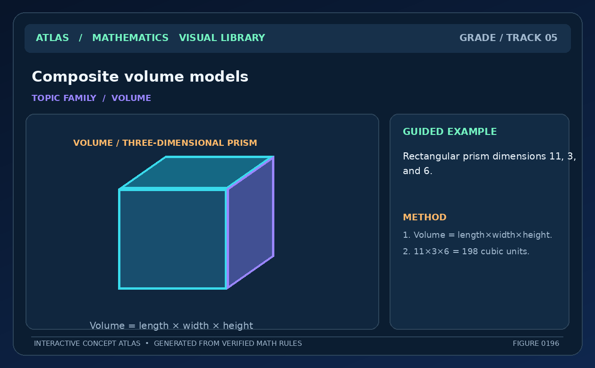
Rectangular prism dimensions 11, 3, and 6.
- Volume = length×width×height.
- 11×3×6 = 198 cubic units.
Volume of a prism 12 by 3 by 6?
Hint: Multiply all three dimensions.
Show answer and verify
216
Check the units, inputs and intermediate steps. Different solution methods may be valid.
Whole-number ratios introduction
Whole-number ratios introduction: Keep the order of compared quantities and scale both parts by the same factor. Equivalent ratios represent the same proportional relationship.
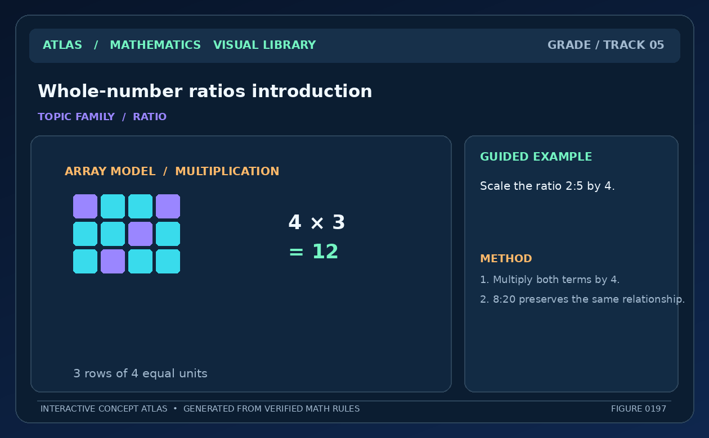
Scale the ratio 2:5 by 4.
- Multiply both terms by 4.
- 8:20 preserves the same relationship.
If 2:5 is scaled by 5, what is the first part?
Hint: Multiply both components by the same number.
Show answer and verify
10
Check the units, inputs and intermediate steps. Different solution methods may be valid.
Patterns in input-output tables
Patterns in input-output tables: Keep the order of compared quantities and scale both parts by the same factor. Equivalent ratios represent the same proportional relationship.
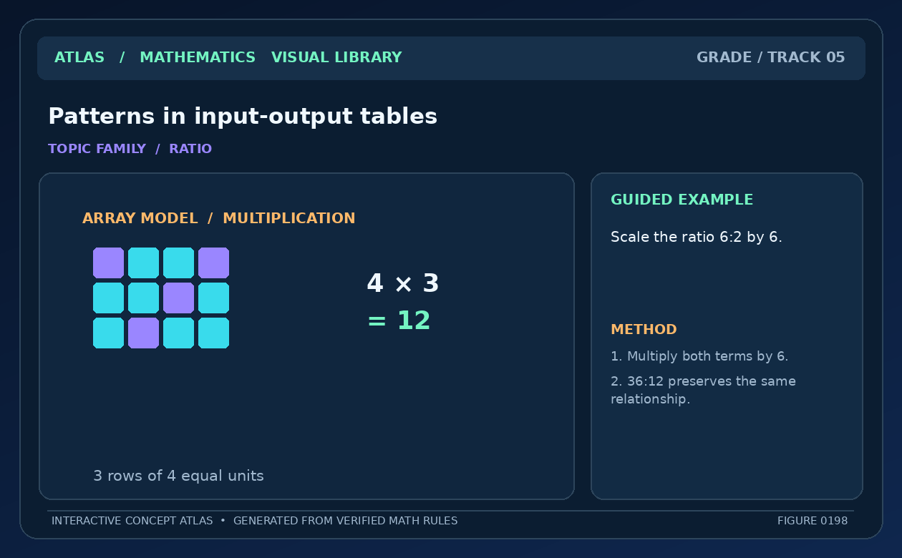
Scale the ratio 6:2 by 6.
- Multiply both terms by 6.
- 36:12 preserves the same relationship.
If 6:2 is scaled by 7, what is the first part?
Hint: Multiply both components by the same number.
Show answer and verify
42
Check the units, inputs and intermediate steps. Different solution methods may be valid.
Data distributions on line plots
Data distributions on line plots: Organize observations and distinguish measures of center from measures of spread. The mean is the total divided by the number of observations.
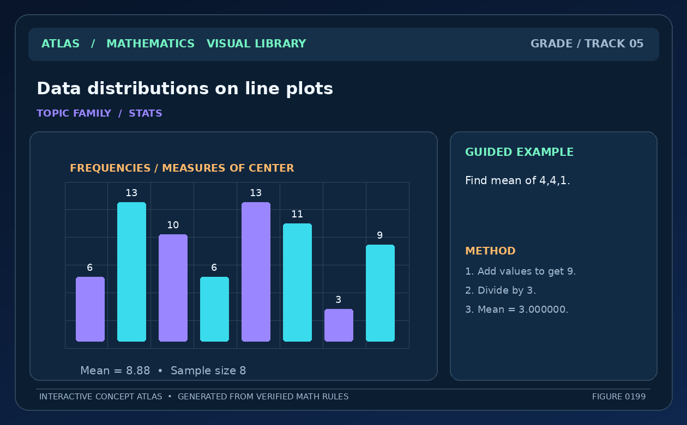
Find mean of 4,4,1.
- Add values to get 9.
- Divide by 3.
- Mean = 3.000000.
Mean of 4,6,8?
Hint: Sum observations and divide by count.
Show answer and verify
6
Check the units, inputs and intermediate steps. Different solution methods may be valid.
Averages introduction
Averages introduction: Organize observations and distinguish measures of center from measures of spread. The mean is the total divided by the number of observations.
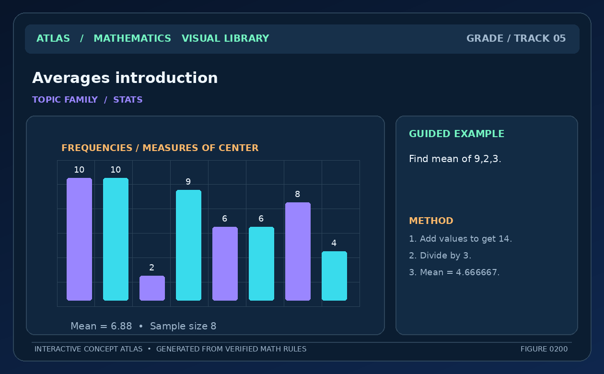
Find mean of 9,2,3.
- Add values to get 14.
- Divide by 3.
- Mean = 4.666667.
Mean of 9,11,13?
Hint: Sum observations and divide by count.
Show answer and verify
11
Check the units, inputs and intermediate steps. Different solution methods may be valid.
Interpreting trends from charts
Interpreting trends from charts: Organize observations and distinguish measures of center from measures of spread. The mean is the total divided by the number of observations.
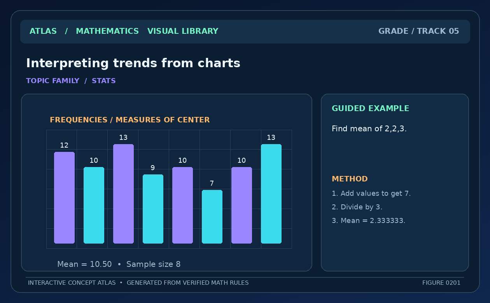
Find mean of 2,2,3.
- Add values to get 7.
- Divide by 3.
- Mean = 2.333333.
Mean of 2,4,6?
Hint: Sum observations and divide by count.
Show answer and verify
4
Check the units, inputs and intermediate steps. Different solution methods may be valid.